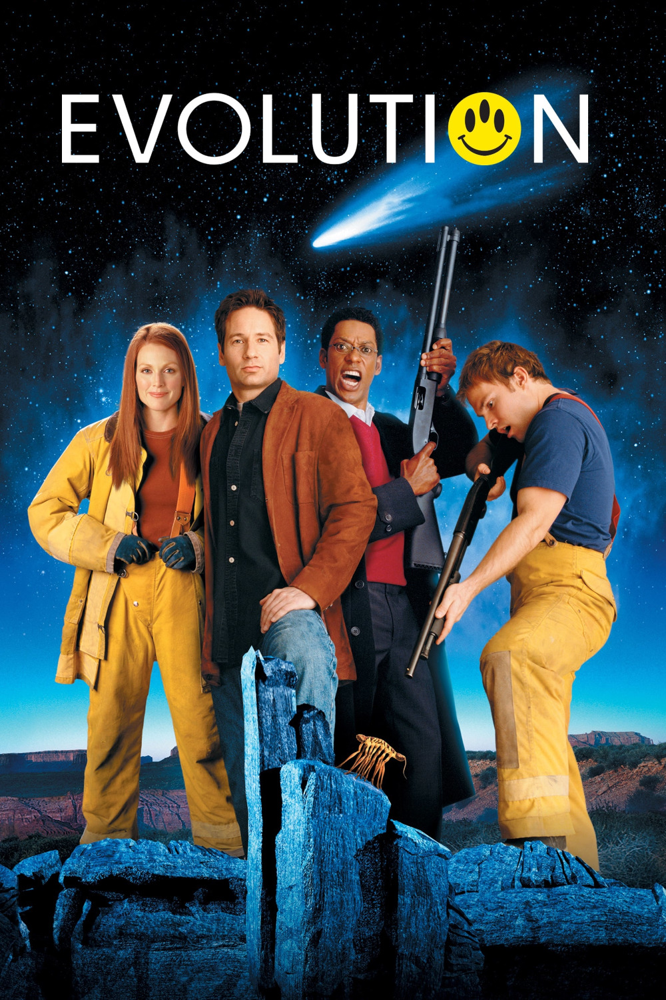

Мировая премьера: 8 июня 2001
Слоган: Приятного вам конца света!
Сюжет: Преподаватели местного колледжа Айра Кейн и Хэрри Блок оказываются на месте падения метеорита, где обнаруживают одноклеточные инопланетные организмы. К расследованию присоединяется правительственный научный сотрудник Эллисон Рид, однако вскоре разногласия между ней и местными учёными отходят на второй план. Инопланетные организмы начинают эволюционировать с невероятной скоростью, превращаясь во всё более опасных существ, и теперь исследователям предстоит объединить усилия, чтобы предотвратить угрозу, нависшую над всем человечеством.
Режиссёр: Айвен Райтман
В ролях: Дэвид Духовны, Орландо Джонс, Джулианна Мур
| Дэвид Духовны | Доктор Айра Кейн |
| Орландо Джонс | Профессор Хэрри Блок |
| Джулианна Мур | Доктор Эллисон Рид |
| Шонн Уильям Скотт | Уэйн Грей |
| Тед Левайн | Генерал Расселл Вудмен |
| Дэн Эйкройд | Губернатор Люис |
| Итан Сапли | Дик Дональдс |
| Майкл Рэй Бауэр | Дэнни Дональдс |
| Пэт Килбейн | Офицер Сэм Джонсон |
| Тай Бурелл | Полковник Флемминг |
| Кэтрин Таун | Надин |
| Грегори Итцин | Бэрри Картрайт |
Бюджет: $ 80 млн.
Кассовые сборы в США: $ 38 млн.
Кассовые сборы в мире: $ 98 млн.
Продолжительность: 1 ч. 36 мин.
Рейтинг: 6.1